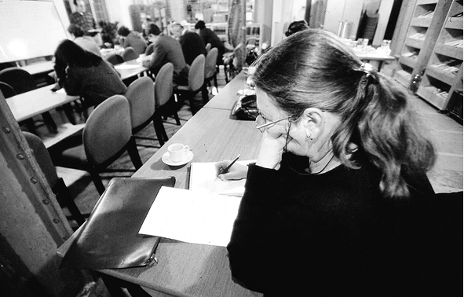
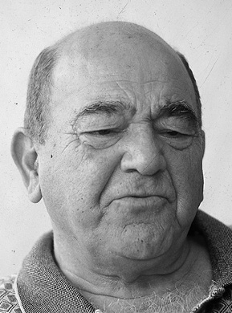
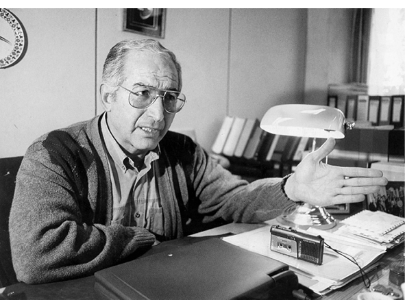

ABD Harıl Harıl Osmanlı Okuyor!
Osmanlı tarihi son yıllarda sadece Tür ki ye’de ilgi odağı olmuyor, Avrupa ve Amerika’da gözle görülür Osmanlı edüdleri dikkat çekiyor. Amerika’da 30 üniversitede Osmanlı Tarihi okutuluyor. Bunun en erken sonucu bu edimlerin tek yönlü tarih okuyuculuğunu ortadan kaldırması
Dersimiz Osmanlı!
“Amerika’da 25 yıl önce 5 üniversitede Osmanlı Tarihi okutulurken bu sayı bugün 30-40 civarına ulaştı. Ve giderek de artıyor...” Harvard Üniversitesi’nde Osmanlı Tarihi okutan Prof. Dr. Cemal Kafadar’ın, yakınlarda yaptığı kısa Türkiye ziyareti sırasında ayak üstü söylediği bu sözleri nasıl yorumlayacağımız konusunda tereddüt ettik. “Amerika Osmanlı’yı keşfediyor” mu desek yoksa “Emperyal Amerika’nın olağan ilgisi” deyip geçsek mi diye. İkincisinde karar kıldık; “Yeni Dünya Düzeni’nin efendisi olan Amerika tabii ki Osmanlı’ya bigane kalamazdı” dedik. Cemal Kafadar bizim olayı hafife alma eğilimimizi fark etmiş olmalı ki hamasî Osmanlı söylemlerine karşı olan bir tarihçi olmasına rağmen “Hayır, bu ilgiye mazhar olan başka bir ülke tarihi yok şu sıralarda” deme ihtiyacı hissetti.
Doğrusu Türkiye için de benzer bir durum söz konusu; resmî ideoloji daha birkaç yıl önce 700. yıl kutlamaları sırasında Osmanlı’yla ‘barıştı’. Ve gerçek anlamda Osmanlı algısı ve araştırmaları son 10 yılda gözle görülür mesafeler katetti. Amerika üniversitelerinde son 20 yılda on kat artan ilginin bizdeki yönelişlerle aynı döneme tekabül ediyor olması da pek tesadüfî sayılamaz. Osmanlı tarihine ilgisi olan, gelişmeleri takip eden birinin ilk fark edeceği şey bu anlayış değişikliğidir. Yani etkileşim çoktan başlamış...

Balkanlarda ve Ortadoğu’da yaşanan krizler Osmanlı tarihine yönelik ilgiyi arttırdı.
Etkileri başlıbaşına bir başlık konusu ama esas sorulması gereken şu; “Acaba Amerika’nın Osmanlı tarihine olan ilgisinin sebebi ne? Wisconsin Üniversitesi hocalarından Prof. Dr. Kemal Karpat’ın anlattığı iki olay sebebi anlamadan önce talebin yoğunluğunu görmemiz bakımından önemli. “Asıl alanı Latin Amerika olan bir öğrenci, benden Osmanlı Tarihi dersi almıştı. Doktorasını aldıktan sonra vazife ararken aynı zamanda Osmanlı Tarihi dersi verebileceğini de özgeçmişine yazmış. Bir üniversitede yer açılmış. Fakat ona şunu sormuşlar. ‘CV’nde gördük, Osmanlı Tarihi dersi de almışsın. Bizde Osmanlı Tarihi dersi verebilir misin?’ Halbuki tek bir ders almış idi. Verebilirim demiş. Test etmek, konuşma kabiliyetini, şunu bunu anlamak için ona bir konferans verdirmişler. Konferansı Osmanlı Devleti üzerine... Pek de başarılı bir şekilde konuşmuş falan ve ona profesör asistanlığı verdiler, düşününüz.” Kemal Karpat, başka alanda doktora yapmış bir başka öğrencinin de benzer bir şekilde “Osmanlı Devleti’nin zayıflamasının nedenleri” üzerine konferansa tâbi tutularak bu görevi aldığını söylüyor. “Osmanlı Tarihi dersi aldığını hatırlamıyorum ama gayretli bir öğrenciydi. Konferansa gitmeden önce bana geldi, ‘Bu konuda bana kaynak verebilir misiniz?’ dedi. Elimde bir kitap vardı, onu verdim. Başka bir şey bildiği yok...” Wisconsin Üniversitesi öğretim üyesi Prof. Dr. Kemal Karpat’ın anlattığı bu iki olay son 6 ay içinde gerçekleşmiş; her iki doktora öğrencisi de Amerikalı ve üstelik hiç Türkçe bilmiyorlar.
Mesele Balkanlar
Prof. Dr. Cemal Kafadar, bu ilginin Amerika’nın Balkanlar’ı anlamak istemesinden kaynaklandığını söylüyor. Osmanlı’dan sonra bir türlü durulmayan ve 1990 sonrasında bir hayli karışan bu coğrafyada Osmanlı’nın kurduğu “Pax Ottomana”yı anlamak istiyorlar. Pek çok tarihçi, Prof. Dr. Kemal Karpat ve Prof. Dr. Halil İnalcık’ın bu ilgide önemli bir payı olduğunu söylüyor. Kemal Karpat, kendilerinin ön ayak olmasıyla pek çok işin gerçekleştirildiğini fakat asıl ilginin Kafadar’ın söylediği konuyla ilgili olduğunu düşünüyor. “Asıl ilgi başka yerden doğuyor. Son 15-20 yıl içinde Balkanlar’da ve Rusya’da çöküntüler meydana geldi ve buralarda milliyetçilik ortaya çıktı. Sovyetler’in bütün gayretlerine rağmen orada yaşayan 130-140 kavimi 70 sene boyunca asimile edememesi ve nihayet bu rejimin çökmesinden sonra yeni cumhuriyetlerin ortaya çıkması şu düşünceyi doğurdu: Sovyetler bütün imkanlara sahip olmasına rağmen bu milliyetleri memnun edemedi. Diğer taraftan Osmanlı’ya bakıyorsun; çeşitli milliyetlerden kurulu olmasına rağmen 600 sene ayakta durdu. Avrupa onu yıkmamış olsaydı hâlâ ayakta olacaktı. Balkanlar’da 1990’dan sonra olaylar aynı meseleyi şiddetli ve aktüel bir şekilde ortaya çıkardı. Sırp Boşnak’ı öldürüyor, Hırvat Sırb’ı öldürüyor, Makedon Arnavut’u öldürüyor ve bunlar dünya çapında olaylar. Bakıyorsunuz ki Osmanlı’da bu yok. Osmanlı döneminde Balkanlar’da ve Rusya’da bu gibi milliyetler arasında kavgalar olmadı. İşte bu nedenle, ‘Osmanlı bu kadar farklılığı bir arada nasıl tutabildi, anlayalım bunu, nesi vardı bu adamların’ denilmeye başlandı.” Yeni bakış açılarıyla Osmanlı Tarihi çalışmalarını basan Tarih Vakfı Yurt Yayınları Yönetim Kurulu üyesi Prof. Dr. İlhan Tekeli’ye göre Osmanlı’nın ilgi odağı olması, farklılıkları aynı sistem içinde var etmesinden kaynaklanıyor. Hacettepe Üniversitesi hocalarından Prof. Dr. Ahmet Yaşar Ocak, ilgiyi Türkiye açısından yorumlamaktan yana: “1990’larla başlayan, Ortadoğu, Balkanlar gibi bölgelerdeki yeni durumların Türkiye’nin üzerinde yapacağı etkiler ve bunun sonucunda Türkiye’nin siyasal reflekslerini anlamaya çalışma, analiz etme ve dolayısıyla sonuçlarının Türk-Amerikan ilişkilerini ne yönde etkileyebileceği konusunda bilgilenme amacını da unutmamak lazım.”

Prof. Dr. Kemal Karpat Amerika’da kısa süreli Osmanlı dersleri alan kişilerin bile rağbet gördüğünü söylüyor.
Prof Dr. Cemal Kafadar ve birkaç önemli tarihçi (Halil İnalcık, Kemal Karpat vs.) Osmanlı tarihinin Amerika’da ilgi görmesinin sebeplerinden biri.
Bazıları Balkanlar’daki, bazıları Türkiye’deki değişimleri anlamak diyor bu yaklaşımın sebebine. Bunlar arasında Osmanlı’nın ‘çoğulculuğu’ nasıl sağladığı merakı akla yakın görünüyor. Bugünkü sorunları anlamak için tarihi bilmenin gerekliliğinden kaynaklanan bir ilginin olduğu ortada. Fakat birkaç önemli bilim adamımızın katkıları ya da ‘arz’ları, bu talebin doğmasında önemli bir etken. Ahmet Yaşar Ocak’a göre Kemal Karpat ve Halil İnalcık’ın yıllar boyu yaptıkları çalışmaları göz ardı etmemek gerekiyor. Amerikalı birkaç arkadaşıyla kurdukları Türk Araştırmaları Cemiyeti’yle Türk tarihinin önemini akademik mahfillerde öteden beri savunagelmişler. “Biz Osmanlı etütlerini Türkiye Türkleri içine alıyoruz. Türkiye Türkleri’nin dünya tarihi açısından önemini, etkisini, anlamını öteden beri savunuyorduk. Ve bu cemiyet vasıtasıyla bu fikirleri daha pratik bir şekilde üniversitelere şu veya bu şekilde yaymak fırsatını bulduk” diyor Kemal Karpat. Amerika’nın ve Avrupa’nın gösterdiği bu yoğun ilgi Osmanlı tarih anlayışını da etkiliyor. Ahmet Yaşar Ocak, Osmanlı tarihinin övgü ve sövgü hattından çıktığını söylerken, İlhan Tekeli, “Bizde ulusal tarih yazıcılığı olduğu için imparatorluğa da ulusal bakış açısından bakıyorduk. Ayrıca sosyal ve ekonomik tarih anlayışı ortaya çıktı” diyor.
***
Prof Dr. Ahmet Yaşar Ocak:
Pax Ottomana’yı anlama ihtiyacı
– Amerika’nın Osmanlı tarihine ilgisi nasıl izah edilebilir? Sizce niye ilgi gösteriyorlardır?

Prof. Dr. Ahmet Yaşar Ocak’a göre bu ilgi bizim Osmanlı tarihini daha iyi anlamamıza, eskiden hiç temas edilmeyen yeni problemler, yeni yöntemlerle karşılaşmamıza yol açacak.
Amerika’nın Osmanlı tarihine ilgisi yeni bir olay değildir. Kaldı ki Amerikan üniversitelerinde sadece Türk veya Osmanlı değil, tıpkı Batı Avrupa üniversitelerinde, bilim ve araştırma kurumlarında olduğu gibi dünya tarih ve medeniyetleri incelenir. Mesela iki sene önce Fransa’da dünyaca ünlü College de France’da, Gilles Veinstein’ın başkanlığını üstlendiği bir Türk ve Osmanlı Etüdleri Bölümü açıldı. Bu çok önemli bir olaydır. İlginçtir, Türkiye’de akademik tarih çevrelerinde bile fazla yankı yapmadı. Amerika’ya gelince, Türkiye’nin Ortadoğu’daki stratejik yeri ve Amerika ile bu çerçevedeki ilişkileri sebebiyle Amerikan üniversitelerinde, özellikle de Harvard, Wisconsin, Chicago vs. gibi önde gelenlerde eskiden beri Ortadoğu Araştırmaları bölümlerinde Osmanlı tarihine yer verilmiştir. Bilindiği gibi Halil İnalcık ve Kemal Karpat gibi önde gelen Türk tarihçileri Amerika’da yıllarca Osmanlı Tarihi dersi okuttukları gibi, Cemal Kafadar gibi Türk, Roads Murphy, Cornell Fleischer gibi genç kuşağa mensup Amerikalı Osmanlı tarihçileri de yetişti. Son yıllarda Amerika’da Osmanlı tarihine eğitim programları içinde yer veren üniversite sayısının artmasına gelince, bir defa bunu demin özetlediğim çerçevenin tabiî bir devamı olarak görmek lâzım. İkicisi, 1999 yılının Osmanlı Devleti’nin kuruluşunun 700. yıldönümü olması dolayısıyla Osmanlı tarihinin dünya genelinde akademik çevrelerde yeniden aktüalite kazanması ve dolayısıyla daha bir ilgiyle araştırılmaya girişilmesiyle de ilgisi olduğunu sanıyorum. Başka bir deyişle, Osmanlı tarihi adeta yeniden keşfedildi. Ortadoğu ve Balkanlar’da yaşanan krizler de bir anlamda, buralarda üç dört yüzyıl süren Pax Ottomana’yı daha bir yakından inceleme ihtiyacını ortaya çıkardı. Ayrıca Amerika açısından, bu büyük tarihi tecrübeyi anlayıp yararlanma gibi salt bilimsel merakı tatmin amacının yanında, 1990’larla başlayan, bu saydığım bölgelerdeki yeni durumların Türkiye’nin üzerinde yapacağı etkiler ve bunun sonucunda Türkiye’nin siyasal reflekslerini anlamaya çalışma, analiz etme ve dolayısıyla sonuçlarının Türk-Amerikan ilişkilerini ne yönde etkileyebileceği konusunda bilgilenme amacını da unutmamak lâzım.
– Bu ilginin sonucu olarak Türkçe’ye de çevrilen yeni araştırmalar ve çalışmalar ortaya çıkıyor. Bu ilgi Osmanlı tarihine bakışı nasıl etkiler?
Bu ilginin sonucunda ortaya konan bilimsel çalışmalar hiç şüphe yok ki bizim Osmanlı tarihini daha iyi anlamamıza, Osmanlı tarihi konusunda eskiden hiç temas edilmeyen yeni problemler, yeni yöntemlerle karşılaşmamıza yol açacak. Belki daha önemlisi, bugüne kadar, çok az istisna, daha çok ideolojik motivasyonlar güdümünde sövme veya yüceltip takdis etme istikametinde yürüyen Türkiye Osmanlı Tarihi araştırıcılığını da daha objektif bir istikamete sokmaya vesile olabilir diye düşünüyorum.
(Aksiyon 348. sayı)